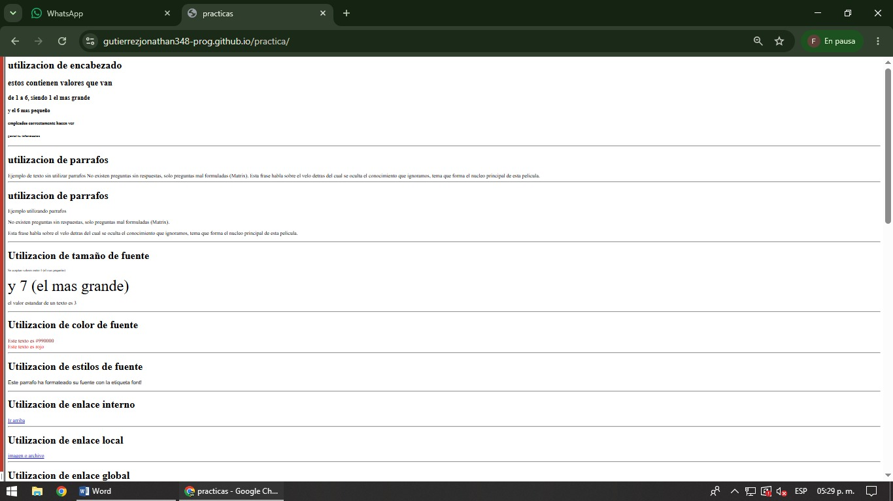

En esta práctica se estudian las etiquetas básicas de HTML que permiten construir la estructura inicial de una página web. Se utilizan las etiquetas h1, h2, h3, h4, h5 y h6 para crear títulos de distintos tamaños e importancia dentro del documento. También se emplea la etiqueta p para crear párrafos y organizar la información de manera clara. Para modificar la apariencia del texto se utiliza la etiqueta font, permitiendo cambiar el tamaño, color y tipo de letra.La etiqueta a se utiliza para crear enlaces que pueden dirigir al usuario hacia otras páginas web, archivos locales o diferentes secciones dentro de la misma página. Además, se utilizan anclas mediante el atributo name para facilitar la navegación interna. La etiqueta img permite insertar imágenes en la página web. Mediante atributos como src, width, height y alt se puede definir la ubicación, tamaño y descripción de cada imagen. El objetivo de esta práctica es aprender las etiquetas fundamentales de HTML y comprender cómo influyen en la estructura y presentación de una página web.